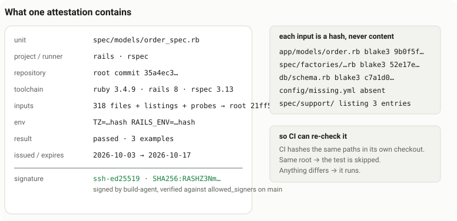

How it works
vci lets CI skip a test that a trusted person or agent already ran on exactly the same code. Everything else runs.
When a test passes on your machine, vci run records every file, package and environment variable it used, and signs that record with your SSH key. The signed record is an attestation. In CI, vci plan checks the signature, re-hashes every recorded input from CI's own checkout, and skips the test only if the signer is trusted and nothing has changed. In every other case the test runs.
vci skips or runs whole units: a test file for Vitest, pytest, Rails and RSpec, a package for Go, a test target for Cargo.
What an attestation is
An attestation is a signed list of everything one unit depended on when it passed, stored as hashes rather than contents:

vci finds a unit's inputs with collectors: hooks loaded into the test runner that record each file, directory, package and variable the test touches. (Rust has no such hook, so for Cargo the inputs are decided conservatively from the source instead.)
When a unit passes and did nothing vci cannot observe, vci run builds an in-toto statement and signs it with your SSH key (SSHSIG, namespace vci-attest) inside a DSSE envelope. The statement records:
- inputs: every file (content hash), directory listing, symlink and probed-but-missing path the unit used;
- global inputs: lockfiles, runner config and
vci.toml; - externals: packages, modules, crates or gems, by name and version;
- environment: a hash for each relevant variable, never its value;
- toolchain: runner and language versions, OS and architecture;
- identity: the repository (its root commit), the test id, the command line, the issue and expiry times.
Attestations are keyed by unit and inputs, not by commit. So they survive rebases and apply on every branch.
When vci run refuses to attest
If vci cannot vouch for a unit, it signs nothing, and the unit runs in CI. That happens when:
- it failed, or any of its tests was skipped;
- it did something a collector cannot follow: a child process, network access, native code, enumerating the whole environment;
- an input lies outside the repository;
- an input changed during the run.
Each adapter has its own list; see test runners.
Where attestations live
vci has no database, server or storage format of its own. Attestations are git metadata, pushed and fetched like any other ref:

Each attestation is one git-meta value attached to the unit's path:
git meta get path:src/b.test.ts- Locally, values sit in git-meta's SQLite store at
.git/git-meta.sqlite. Your index,HEADand work tree are never touched. - They are exchanged on the remote's
refs/meta/mainby ordinary git push and fetch:vci pushandvci fetch, orgit meta pushandgit meta pull. - Two signers never write the same key, and merges keep keys added on either side.
Nothing in the store is trusted. Anyone with push access can write or delete metadata, exactly as with any other ref. A value that is deleted, overwritten, pruned or never fetched only means the unit runs. Only a correctly signed envelope for exactly this unit, repository, toolchain and inputs skips anything.
How CI decides
vci plan asks the same questions of every unit, and skips it only when every answer is yes:

The core rule: fail open
The default verdict for every unit is RUN. A unit gets SKIP only when one attestation passes every check. Any error, doubt or unrecognised behaviour means it runs. Each candidate is checked inside an error boundary, so even a crash while checking is a failed check, never a skip.
Every check, in order
A file matching policy.never_skip always runs. Otherwise each stored candidate is checked in this order, and the first candidate to pass every check means skip:
| # | Check | Passes when |
|---|---|---|
| 1 | envelope | it parses as DSSE with the in-toto payload type |
| 2 | signature | the SSH signature covers the exact stored payload bytes |
| 3 | signer | the key is in the base commit's allowed_signers, within its validity dates |
| 4 | statement | predicate type and subject match |
| 5 | expiry | not expired, not issued in the future, lifetime within max_ttl |
| 6 | repo, test id, adapter, argv | all match this repository and unit |
| 7 | toolchain | language and runner versions match, and OS and architecture satisfy policy.platform |
| 8 | env-config | the [env] configuration at the base commit is the one attested under |
| 9 | result | the unit passed, untainted; declared inputs and waivers still match base policy |
| 10 | global inputs | every global entry re-hashes to the same value in this checkout |
| 11 | inputs | every file, symlink, directory listing and absence re-hashes to the same value |
| 12 | externals | every package is installed in exactly the attested version |
| 13 | env | every hashed variable has the same value |
vci explain prints the first failed check for each candidate.
Trust comes from the base branch
The base branch is the branch a pull request merges into, usually main. CI takes its rules only from the base commit, the tip of that branch, never from the pull request:

.vci/allowed_signers(whose signatures count) andvci.toml(policy) are read from the base commit.- A pull request that adds its own key or loosens policy changes nothing for itself. The change counts only once it is reviewed and merged.
- If either file is missing or unreadable at the base commit, everything runs.
- To revoke a signer, remove its line from
.vci/allowed_signerson the base branch.
The base ref must be the base branch's commit. If CI passes a ref the pull request controls (its head, its merge commit or HEAD), keys and policy come from the code under test. The action passes github.event.pull_request.base.sha by default, and vci plan warns when the base commit is HEAD or contains it.
Threat model
Protected against
- Forged or tampered attestations: one flipped byte in the signed payload fails the signature.
- Untrusted signers, including a pull request that adds its own key to
.vci/allowed_signers. - Replay across repositories, test files, command lines, toolchains or env configurations, or after expiry.
- Stale inputs: every recorded input is re-hashed from CI's checkout, including files that must still be absent.
Not protected against
- A trusted signer lying, or a stolen signing key: an attestation proves who made a claim, not that the test ran.
- A signer under-declaring inputs: CI re-hashes only the inputs the attestation lists.
- Inputs the collectors cannot see: native addons, time, locale, randomness, hardware, network use outside the patched Node APIs.
- Data captured before the collectors loaded, and the user and groups tests run as (only root or not is recorded).
- Test code that deliberately evades the collectors.
- Malicious dependencies that match the lockfile: packages are identified by version, not by file hashes.
- Third-party Vite plugins reading files in the main process: only their package version is an input.
- Time zone and locale in strict mode:
TZcounts only if declared; the system zone andLANG/LC_*are not hashed. - A CI job whose base ref the pull request controls: pass the base branch's commit, as the action does by default.
Limit what a signer can get wrong. Keep allowed_signers short, use hardware-backed keys, and set valid-before on entries. List tests whose inputs no collector can see in policy.never_skip.
The backstop. Keep your default branch in policy.no_skip_refs (the vci init default). Every merge then gets a full run, which catches a false claim after the fact.
CI as a trusted signer. CI can attest its own runs (vci ci --key, the action's signing-key), and policy.no_skip_refs_except lets that key's attestations skip on main too. Main then skips only what CI itself already ran on the same inputs, but whoever holds that key can make main skip anything until its line is removed. Keep it in a GitHub Environment limited to the default branch, use one key per repository, keep its ttl short, and rotate it by replacing its line in .vci/allowed_signers. See attesting in CI.
Go deeper
The reference has every recorded input, every refusal, and the known limitations per adapter. Design notes are in docs/.